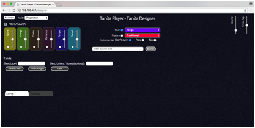
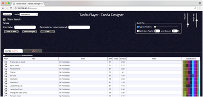
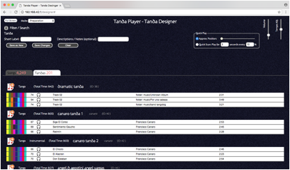
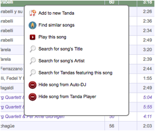
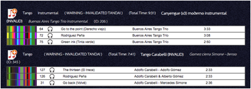

Tandas can be mixed styles and have any number of songs in them. You can have the exact same songs in multiple tandas and often you might swap the order simply to offer variety when the songs work in different orders.
Teachers might want to build tandas of say 20 songs of one style or by one orchestra for the purposes of playing consistent content within one lesson. They can always jump around the tanda to play songs in any order within the lesson through the remote control app on the phone.

The search features are the configured controls and some, none or all of them can be used to define a search. In addition any text (artist, title, notes or whatever you have defined) can all be searched using the single text search box.
Once a search is done, the controls are hidden to make more room for the results but clicking on the button in the top left near the “Filter / Search “ text will bring them back.

You can switch between the songs or the tandas that match the search using the tabs provided.

Clicking on a song brings up a menu with more options such as finding more songs by the same artist or adding this song to a new tanda. The features work best with good classification information but they will try at least to find songs by the same artists etc.

Once you have arranged all the songs in the tanda into the required order you can save it. Note that saving can save a new tanda (so you save once, then change the order and “Save as new” again to create another one) or you can save the changes to the tanda allowing for adjustments to existing tandas.
If you go wrong, just clear it and start again.
If you remove a file from the USB device which is used in a Tanda that Tanda will be marked as invalid. This is shown with text appended to the name which can then be searched as for any other text.

To fix simply select the Tanda for editing. When the “save changes” button is clicked, the selected Tanda’s title will be changed to remove the Invalid label. You may need to search again to see the changes.